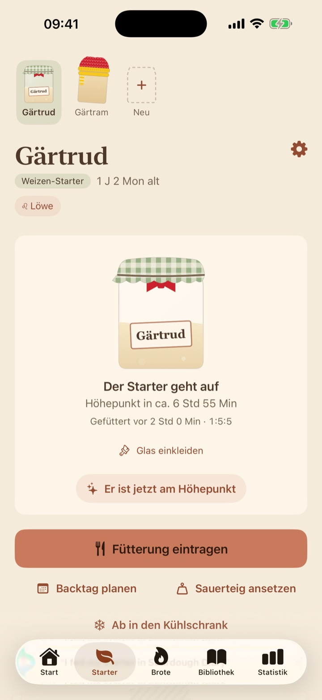
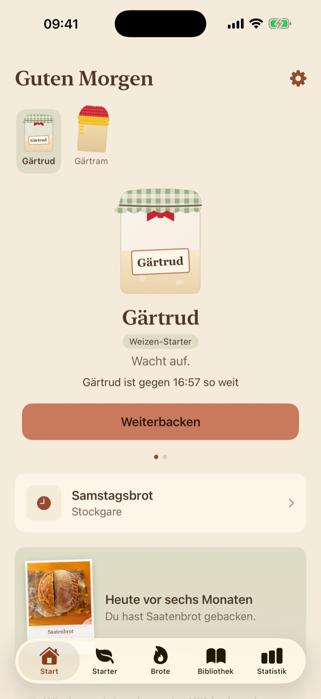
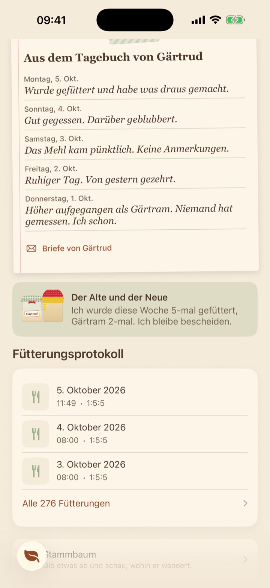
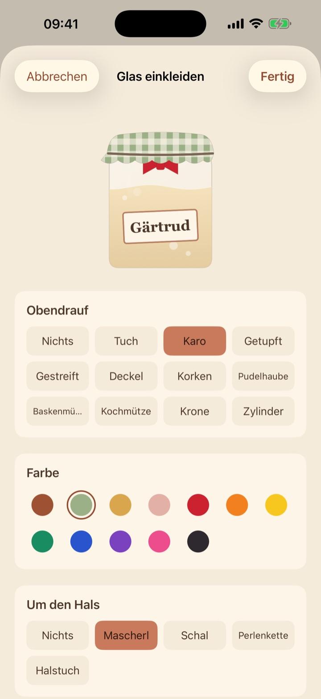
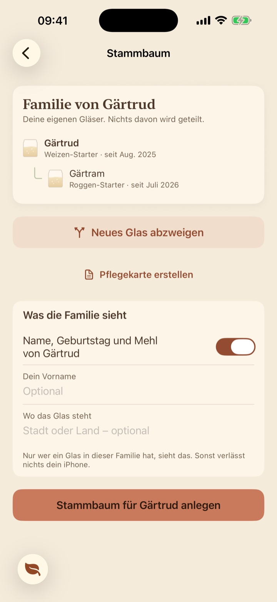
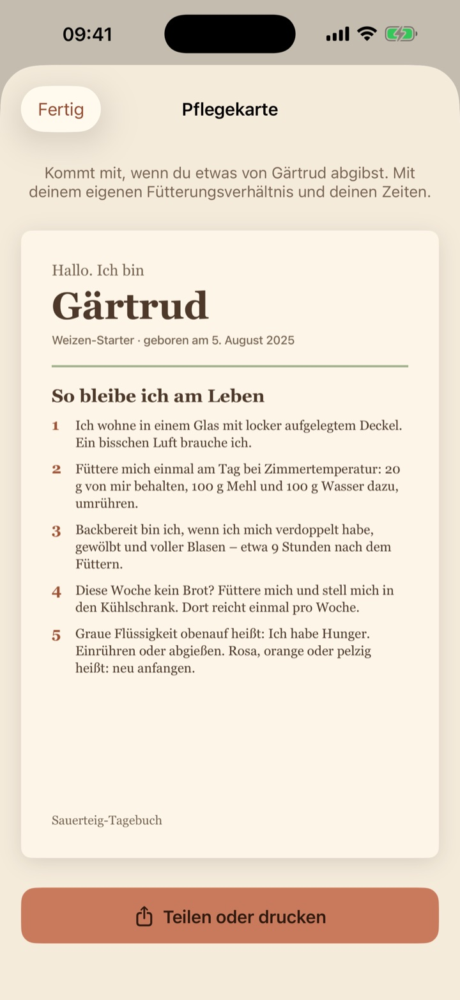

Ein Starter mit Namen
Lernt dein Glas kennen und sagt dir, wann er so weit ist.

Weiß, wann er am Höhepunkt ist
Eine Vorhersage für dieses Glas, in dieser Küche.
Am Anfang stehen Fütterungsverhältnis und Küchentemperatur. Sag ihr, wann er wirklich am Höhepunkt war, und die nächste Vorhersage stimmt besser.

Ein Glas mit Meinung
Es führt Tagebuch. Es ist leicht unbeeindruckt.
Stups das Glas an, und es antwortet. Am Sonntagabend schreibt es dir einen Brief über seine Woche. Hast du zwei, haben sie Ansichten übereinander.

Das Glas einkleiden
Tuch, Korken oder Krone. Zwölf Farben. Perlen, wenn es sie verdient hat.

Ein Starter hat Familie
Die meisten Starter kommen von jemandem, oder gehen an jemanden.
Gib etwas ab, und das Glas behält seinen Platz im Stammbaum. Wer ein Stück davon hat, sieht, wohin die Familie gewandert ist. Sonst niemand.


Platz für das ganze Regal
Mehr als ein Starter
Ein Regal voller Gläser, jedes mit eigenen Erinnerungen.
Womit er gefüttert wird
Weizen, Roggen oder Dinkel: Jedes Glas sagt, wovon es lebt.
Kühlschrank und Urlaub
Lass ihn in der Kälte ruhen, mit einem Plan für die Zeit, in der du weg bist.
Und die kleinen Dinge
- Ein SternzeichenNach seinem Geburtstag, mit Horoskop im Sonntagsbrief.
- Eine Postkarte aus dem KühlschrankEs schreibt, wenn es schon länger in der Kälte steht.
- Passend angezogenSchal im Kühlschrank, Sonnenbrille bei Hitze, Hut zum Geburtstag.
- Kleine GeräuscheEin Blubbern, ein Rülpser. Ein Schalter stellt sie ab.
- Sauerteig ansetzenSag, wie viel du brauchst und wann. Es sagt, was du abwiegst.
- Gläser im RuhestandEin Glas, das es nicht mehr gibt, bleibt im Stammbaum.
Dein Starter wartet
Laden im App Store Bald im App StoreDein Tagebuch synchronisiert über deine eigene iCloud, und du kannst eine Sicherung aufheben.